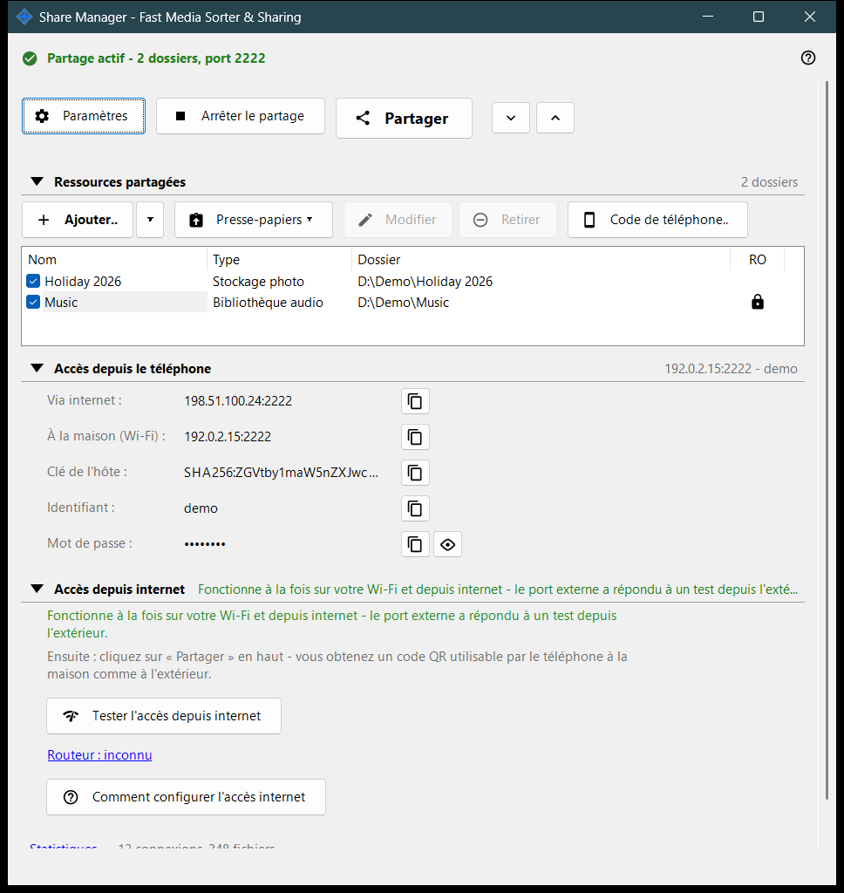
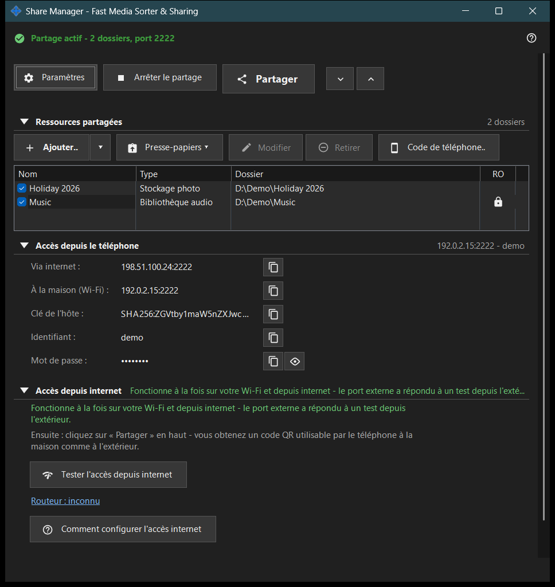

Share Manager - Fast Media Sorter & Sharing
Objectif
La fenêtre principale de Share Manager : le service local de partage qui exécute aussi les opérations planifiées sur les fichiers. Elle liste les dossiers que ce PC partage avec un téléphone par SFTP, démarre et arrête le partage, fournit le code d'accès et montre comment le téléphone peut joindre le PC. Les opérations planifiées sur les fichiers fonctionnent aussi sans partage de dossiers : elles ont leur propre fenêtre, qui s'ouvre depuis le menu de l'icône de la zone de notification ou depuis le menu de dossier de la visionneuse ; leur page et celle du compte d'échange se trouvent en outre dans les paramètres du gestionnaire. Elle s'ouvre depuis la visionneuse ou depuis l'icône de la zone de notification ; fermer la fenêtre laisse l'application dans la zone de notification.


Dans cet ordre
- Appuyez sur «Ajouter..» et choisissez «Dossier..» pour mettre un dossier dans la liste.
- Cochez le dossier : seuls les dossiers cochés sont servis.
- Appuyez sur «Démarrer le partage» (il faut au moins un dossier coché).
- Appuyez sur «Partager» pour obtenir le code QR ou le fichier .fmscfg destiné au téléphone.
- Pour un accès depuis l'extérieur de votre réseau domestique, ouvrez le groupe «Accès depuis internet» et utilisez ses deux boutons.
- Appuyez sur «Arrêter le partage» quand vous avez terminé.
Les éléments
Rangée du haut
«Paramètres» ouvre les paramètres du gestionnaire. «Démarrer le partage» devient «Arrêter le partage» tant que le serveur fonctionne. «Partager» ouvre l'assistant du code d'accès et ne fonctionne que lorsque le partage est actif ; sinon l'indication demande de démarrer d'abord le serveur. «Tout développer» et «Tout réduire» ouvrent ou ferment les groupes en dessous.
Ressources partagées
Une ligne par ressource, avec une case à cocher et les colonnes Nom, Type et Dossier. Une ligne cochée est servie aux téléphones ; une liste vide affiche «Ajoutez votre première ressource..». Si vous décochez le dernier dossier coché, la fenêtre demande s'il faut arrêter le partage, car les téléphones connectés seront déconnectés. Démarrer le partage sans aucun dossier coché affiche seulement l'indication «Ajoutez d'abord un dossier et cochez-le.»
Accès du téléphone
Les données de connexion dont a besoin un téléphone ou n'importe quel client SFTP : l'adresse par internet et à la maison (Wi-Fi), IPv6, la clé de l'hôte, l'identifiant et le mot de passe. «Afficher le mot de passe» le révèle et «Masquer le mot de passe» le masque de nouveau. Le texte sous le groupe explique si le téléphone joint le PC seulement à la maison ou aussi de l'extérieur.
Accès depuis internet
«Tester l'accès depuis internet» ouvre la fenêtre du test d'accès depuis internet. «Comment configurer l'accès internet» ouvre le guide du routeur. Le lien «Routeur : ..» ouvre la page propre du routeur ; si aucun n'a été trouvé, il indique «Routeur : inconnu». Le groupe comporte un avertissement : quiconque connaît l'adresse, l'identifiant et le mot de passe peut atteindre tous les dossiers partagés ; ne publiez donc ni le code QR ni le fichier .fmscfg, et désactivez le partage quand vous avez terminé.
Statistiques
Sous les groupes, un lien «Statistiques» se trouve à côté d'un court résumé tel que «N connexions, M fichiers». Le lien ouvre la fenêtre État du partage avec les compteurs complets.
Quand les fonctions serveur sont désactivées
Tant que le composant serveur n'est pas activé, la fenêtre affiche «Les fonctions serveur sont désactivées» et le bouton «Activer les fonctions serveur..», qui ouvre la fenêtre «Activer le partage de dossiers». Si le composant de partage manque dans l'installation, la fenêtre le signale et demande de réinstaller l'application.
Paramètres du gestionnaire · Paramètres de partage SFTP · Paramètres du serveur d’échange